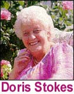
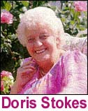

Sobre el tema de la “lectura en frío”, utilizado por “psíquicos/sensibles” como John Edward, Sylvia Browne (quien puede que haya muerto, si es por lo que hemos logrado encontrar) y James Van Praagh, los tres “lectores” más populares en el momento, recuerdo muy bien el trabajo de la fallecida Doris Stokes, quien era muy grande en el Reino Unido y también en Australia, donde vi varias de sus actuaciones. La lectura en frío, el procedimiento de “juego de lengua” que estos artistas de rápida-conversación usan, tiene muchos métodos por los cuales estas personas pueden, sencillamente, salirse de haber dicho las respuestas incorrectas tan rápido, que muy pocas personas lo notarán, a menos que escuchen muy cuidadosamente o que puedan estudiar las transcripciones de lo que actualmente se dijo durante el show.
Simon Hoggart, el conocido escritor, comentarista de radio y televisión y reportero británico que en 1995, con el co-autor Michael Hutchinson, produjo el excelente libro, “Bizarre Beliefs” (Extrañas creencias), nos provee con extraordinaria evidencia de Stokes tratando de salvarse de errores evidentes. Lo siguiente es una transcripción del programa televisivo de la BBC, “40 minutos”, de algunos años atrás, de una actuación realizada en frente de una considerable audiencia. Stokes, como siempre adivinando nombres, iniciales, sugestiones, pistas, cualquier cosa que pueda evocar una respuesta de su público, intentó con “el pequeño Daniel”. Este es una “zanahoria” garantizada para colgar en frente de una audiencia como esta, y obtuvo una mordida inmediata. Voy a interrumpir y a entrometerme en este intercambio frecuentemente para apuntar lo que acaba de ocurrir y para anticipar lo que esta artista debe hacer en ese momento:
Mujer joven: Tengo un Daniel
Esta respuesta, en tiempo presente, indicaría a Stokes que (a) “Daniel” está vivo y (b) Daniel “pertenece” a esta mujer.
Doris Stokes: ¿El pequeño Daniel? MJ: Bastante pequeño
La víctima ofrece esta información —que Daniel es bastante pequeño— de forma voluntaria y libremente y, Stokes, la interpreta —correctamente— diciendo que daniel es un infante, algo que ella no sabía hasta que la mujer le regaló esta información. Recuerden que se espera que las víctimas de este proceso ayuden al “lector” y, como ellos quieren que la lectura sea un éxito, proveen con las pistas con mucho entusiasmo. Stokes transforma su hallazgo con mucha seguridad:
DS: Tú conoces un bebé Daniel. ¿Tuvo que regresar al hospital, amor?
Esta última oración es una pregunta no una revelación. Si la respuesta hubiera sido “no”, Stokes podría haber tenido una victoria parcial aquí por lo menos adivinó que él había estado en un hospital previamente. La probabilidad de que él haya nacido en un hospital, es alta.
MJ: Sí, tuvo que regresar al hospital DS: Pero él está bien ahora, amor.
Esto funciona tanto como una pregunta o como una declaración. Una pregunta porque puede ser tomada como un cuestionamiento sobre el estado del infante, una declaración porque si es cierto, es un “acierto”. En esta ocasión, el tiro no le funciona a Stokes, aunque la mujer rápidamente intenta salvarla. ¡Esta víctima ha estado en este tipo de reuniones anteriormente!
MJ: No. Bueno, quizás él esté bien en tu mundo (espiritual) pero lo hemos perdido.
Stokes necesita hablar rápido para salir de esta y así lo hace:
DS: Sí, eso es lo que ellos están diciendo, que él estará bien ahora, amor
Los citados “ellos” es la población espiritual del “otro lado”. “Ellos” son a menudo culpados por dar la información incorrecta, algo que “ellos” hacen a veces, como una broma. Pero Stokes repara rápidamente su falla cayendo en la visión favorita que mantienen los espiritualistas de que todos continuamos viviendo en “el otro lado” y que Daniel está muy bien “por allá”. Pero la declaración “lo hemos perdido” no es “¡lo que ellos están diciendo!” “Ellos” le dieron a Stokes la información incorrecta, o así le parecerá a la mente escéptica.
DS: Y ellos dijeron, “hemos traído al pequeño Daniel, y luego se fue a casa pero tuvo que regresar al hospital”.
Ahí está, la táctica preferida por todos y más utilizada por los “lectores”. Stokes está repitiendo exactamente lo que la víctima le ha ayudado a desarrollar, como si “ellos” ¡le hubieran dicho todo esto! Les ofrezco aquí un ejemplo de esta misma técnica de una de las lecturas realizadas por James Van Praagh, que a menudo - muy a menudo - contiene este tipo de secuencia, en donde él hace preguntas - ¡porque no conoce las respuestas! - y luego, inmediatamente, reconstruye las preguntas como si hubieran sido reveladas a él por el “otro lado”. Aquí está la secuencia en donde Van Praagh ha “contactado” un espíritu para una víctima:
VP: ¿Es éste su esposo?
M: Sí.
VP: Porque él acaba de decir, “¡Esposo! Soy su esposo, soy su esposo”. ¿Okay? ¿Estuvo él en el hospital antes de fallecer, por favor?
M: Sí.
VP: Porque está hablando de haber estado en el hospital antes de fallecer. ¿Murió en el hospital?
M: Sí.
VP: Es que - estoy esperando que él venga a decirme esto - “¡Sí! ¡Morí ahí!” ¡Él dice que murió ahí!
Pueden ver como este truco, aparentemente obvio, usado en el calor de un intercambio, puede fácilmente pasar sin que lo note el observador. Y noten que se trataban de tres preguntas de Van Praagh, no declaraciones, cada una de ella fue reconstruída como si fueran ¡declaraciones hechas por el muerto! Pero de vuelta con el evento de Stokes:
DS: Y él nunca regresó a casa de nuevo, pero ellos dicen que, “él está bien ahora”. ¿Tiene como tres años ahora, amorcito? MJ: Sí, así es.
Por supuesto que él “¡nunca volvió a su casa de nuevo! ¡Murió! Y, de nuevo, aquí viene la premisa de que nadie nunca muere. Daniel está viviendo en el Cielo y tiene ahora tres años. Un pensamiento reconfortante para la persona doliente.
DS: Lo puedo ver. Tiene el pelo castaño rojizo, amor. MJ: Sí, así lo tiene.
Debemos preguntarnos, ¿y si esta suposición hubiese sido incorrecta? ¡Sin problemas! He escuchado a estos artistas simplemente insistir que el fallecido ahora tiene el cabello del color que ellos dijeron, o que ahora juegan este deporte, o ahora son altos y flacos, ahora que están en el Cielo. Las víctimas del fraude están supuestas a aceptar cualquier cosa si el médium puede inventar cualquier tipo de excusa, simplemente por haberse equivocado.
Vamos por un momento de vuelta a 1925 y a otra sesión espiritista cuando la madre muerta de Harry Houdini fue contactada por un médium. El espíritu de la señora Cecilia Weiss hablaba perfectamente el inglés, lo cual fue una gran sorpresa para harry, quien informó al médium que su madre había hablado hebreo toda su vida, pero ni una palabra de inglés. Impávido, y siguiendo la tradición verdadera de la raza, el médium contestó bruscamente, “bueno, en el Cielo, ¡todo el mundo habla inglés!” Harry no fue convencido por esta afirmación, especialmente, porque su madre no parecía conocer nada sobre su anterior vida, cuando ella estaba “de este lado”.
De vuelta con Stokes:
DS: Sí, él está aquí [el niño], mirando las flores. Sí, Daniel, tu puedes, amor. Él dice, ¿Me podrían dar flores para mi mamá?” [El público suspira]. Así que cuando te vayas esta noche, amorcito, ¿podrías tomar algunas flores?
MJ: (Torpemente) Él…él no era mi bebé.
¡Caramba! ¡Equivocada de nuevo! Stokes había asumido, como era probable que lo hiciera, que esta mujer era la madre de Daniel. Tenía que ponerle un parcho instantáneo a este “boo-boo”. Y así lo hizo:
DS: No, pero ¿conoces a su mamá? MJ: Sí.
El “no” aquí fue enviado como si Stokes de antemano hubiera sabido esto, en vez de haber exclamado un ¡oh! Y haber admitido su error. Ella era una pro - mucho mejor que John Edward, en mi opinión profesional, a pesar de que usan exactamente los mismos métodos. Quizá John deba contactarla, ahora que ella anda en la Tierra del Verano, ¿quizá le pueda pedir algunos consejos?
DS: No, no te lo decía a tí…él dijo, me podrían dar flores para mi mamá, porque nunca creerá que estoy aquí”, y él es un niño hermoso…
Aquí, Stokes ha ampliado la declaración de Daniel para acomodar mejor su falla y, ha procedido a introducir, inmediatamente, el halago esperado y aceptado sobre la hermosura del niño. La observación alternativa, de que el niño era un malcriado, nunca parece ser ofrecida….
DS: Sólo un minuto, Daniel…Él tenía un defecto en el corazón, querida, [la joven mujer asiente con la cabeza], y ellos trataron de repararlo y no funcionó, pero ahora él está creciendo y ya tiene casi tres años, él dice, y sigue hablando…
Un poquito a la defensiva, Stokes repite algo que ya ha descubierto es verdad, que Daniel murió hace tres años, luego de intentar - y conseguir - un intento correcto de la casusa de la muerte. No es una posibilidad remota y funcionó. ¿Y si no hubiera habido una operación del corazón? He escuchado a Stokes - y a otros lectores - insisitir que se llevó a cabo otro procedimiento del cual los padres, o los familiares, no tuvieron conocimiento. Una vez dijo que un hombre, que murió de un derrame, había muerto, en realidad, de una falla cardíaca. Pero stokes racionalizó su falla “explicando” que “había sido su corazón lo que terminó llevándoselo, amorcito”.
Así como apuntara Simon Hoggart en la discusión de este extracto, Stokes acertó en la edad del niño y el color de su cabello, aunque ninguno de estos elementos es particularmente sorprendente. La joven mujer le había dicho que Daniel era bien pequeño y, la descripción “casataño rojizo” - rojizo o marrón dorado - puede aplicarse a casi cualquier color de pelo, excepto por el rubio y el negro.
Si, Stokes era una verdadera “pro” cuando tenía que ver con su vocación.
El lector Barry Moyle me informa:
Quizá conozcas la página web www.phantomorfraud.com. Envié un mensaje de correo a estas personas cuestionando su declaración: “La radiestesia funciona, ha sido probado una y otra vez”. “Radiestesia” está listada como un tema en la parte izquierda de la página. También les sugerí que aplicaran a tu premio del millón de dólares y les envié una copia de tu artículo “El asunto de la radiestesia” (The Matter of Dowsing) que apreció en Swift, vol.2, no 3/4. Enero 1999.
Recibí una respuesta algo ruda, dirigida al “señor de los ojos cerrados” de un tal señor Ross Hemsworth. Entre otras cosas, él dice “no es nuestro trabajo convencer a otros escépticos o, perseguir el dinero de otros escépticos que requieren ser convencidos” y “como practico la radiestesia, ¡YO SÉ que funciona!”
No obstante, lo que más me interesó es lo que dijo luego “estoy en contacto diario con James Randi y él está muy consciente de la investigación que realizamos”. Se que es un hombre muy ocupado, señor Randi, pero estaría muy complacido si comentara sobre esto. Él también me pidió que no malgastara su tiempo contactándolo de nuevo ya que no tenía una mente abierta. Creo que lo complaceré.
Barry, debes reconocer que el reto del millón de dólares es probablemente el elemento más temido en el sistema de creencias que estas personas han construido. No pueden responder a él porque saben que no pueden efectuar las fantasías que creen poder hacer. Este delirio es tan mimado, tan importante para ellos, que ellos inventarán, distorsionarán y mentirán, para evitar enfrentar la verdad. En realidad, la verdad es su mayor enemigo y sale a colación todos los días a través del reto de la JREF.
Ross Hemsworth me ha escrito sólo una vez - y sobre un asunto completamente diferente - pero ciertamente no estoy en contacto diario con él. Él hace esos reclamos porque está alarmado, pero es entendible que lo esté, porque la oferta amenaza sus delirios si, de alguna forma, él es llamado a enfrentar la realidad.
El lector Dan Blum observa, en una réplica a nuestro artículo sobre la aparente alta incidencia de accidentes automovilísticos entre los australianos que son “géminis”. Dan se refiere a esta observación como “tan sólo un pensamiento” pero es el tipo de pensamiento que le damos la bienvenida:
Como puedes notar, no hay forma de saber, sin ver los datos crudos, qué tan siugnificativos son estos resultados en el sentido estadístico. Sin embargo, aún si fueran significativos, existe por lo menos una forma razonable en la que puedo pensar, para unir los accidentes automovilísticos con las fechas de nacimiento. Los adolescentes que acaban de conseguir sus licencias tienden a tener más accidentes, por lo regular, que los demás choferes (por lo menos eso me han dicho y ciertamente me parece más factible). Muchos adolescentes están ansiosos por obtener sus licencias de conducir y tratarán de conseguirlas tan pronto como les sea posible, luego de llegar al cumpleaños relevante. El clima varía, de forma más o menos predecible, según el mes y juega un gran papel en la incidencia de accidentes de autos. Por lo tanto, es de esperarse que observemos a personas nacidas en los meses cuando el clima de Australia no es óptimo para manejar, tener un grado un poco mayor de accidentes que los demás debido a los nuevos choferes que aumentan un poco la norma. Se muy poco sobre el clima de Australia pero a finales de abril y junio (géminis y tauro juntos) es precisamente el final del otoño y principio de invierno y, si no tienen mucha nieve, por lo menos espero que verán mucha lluvia y quizá hasta granizo, etc.
El lector Nigel Dowrick nos dice:
Re: a la compañía aseguradora australiana que ha llevado a cabo esta encuesta de “signos de las estrellas” (¿no debería ser signos solares?) para sus choferes, yo recuerdo que leí algo similar en un periódico británico hace algunos años. Una búsqueda en los archivos del Daily Telegraph, nos trajo un artículo que revela que las personas que peor manejan nacieron bajo el signo de libra y piscis mientras que los que mejor manejan nacieron bajo los signos de sagitario, acuario, leo y capricornio (el mejor de todos). Por otro lado, hay un artículo en The Telegraph, fechado el 27 de marzo de 1997 (no se encuentra en los archivos del Telegraph) en donde el orden de choferes, desde el peor hasta el mejor va de la siguiente manera: 1: Aries, 2: Piscis, 3: Virgo, 4: Acuario, 5: Libra, 6: Géminis, 7: Escorpión, 8: Leo, 9: Tauro, 10: Cáncer, 11: Capricornio y 12: Sagitario.
(Noten que Géminis ocurre a la mitad de la escala aquí, diferente a la encuesta de la compañía de seguro australiana…).
Estas encuestas por diferentes compañías de seguro no impresionan por su consistencia. El único punto de interés aquí es que Capricornio parece estar consistentemente cerca o al final de la lista. ¿Podría estar esto concectado al hecho de que capricornio cubre un período de sólo 29 días mientras que los otros signos van de 30 a 32 días? Esto parecería como una sugestión no muy caritativa pero los artículos no son lo suficientemente definitivos para descartarla.
Bueno, Nigel, si los números de capricornio son por lo menos un seis por ciento hacia los resultados observados, eso haría una ¡excelente posibilidad! Estoy muy emocionado al ver que los artículos que publicamos aquí están estimulando no sólo la discusión pero también ¡pensamientos básicos sobre respuestas probables!
Y ya que estamos visitando de nuevo esta parte del mundo, el siguiente artículo lo publicamos aquí, cortesía de The Skeptic, el diario oficial de los escépticos australianos. Barry Williams es Director Ejecutivo de la organización. Es un viejo y apreciado amigo mío y un poderoso enemigo de las fuerzas irracionales y seudocientíficas “allá al sur”. Noten también, por favor, la atractiva barba. Busquen al grupo en http://www.skeptics.com.au.
Agua fría para un tema caliente por Barry Williams
No es a menudo que un escéptico puede experimentar la sensación de satisfacción que llega al ver una de nuestras áreas de interés finalmente puesta a descansar, pero creo que algunos de nosotros debió haberla sentido al ver el programa Combustión Humana Espontánea en la [televisión australiana]. Originalmente producida para la BBC, el programa fue más allá que un programa similar años atrás y pudo muy bien habernos regalado la explicación final para un misterio de mucho tiempo. Para aquellos que no están familiarizados con el concepto, a través dela historia han habido casos en que se han encontrado los restos de personas, usualmente en cuartos cerrados, con la mayoría de sus cuerpos reducidos a cenizas, sólo piezas de los extremos, como la parte baja de las piernas, permanecían algo intactas, y no había ningún daño serio a los demás contenidos de la habitación.
Este fenómeno ha sido todo un rompecabezas para los investigadores hasta años recientes y, dado que los seres humanos son tan curiosos animales, este misterio ha engendrado muchas extrañas explicaciones. Van desde la moderadamente sublime hasta la patentemente ridícula. En uno de los extremos de esta variedad, ha sido sugerido seriamente que un incremento de metano en nuestros intestinos podría, en casos muy raros, de alguna forma encender la actividad de las enzimas. Esta sugerencia fue eliminadas por un fisiólogo apuntando que tal efecto hubiera resultado en una cadena de ganado explotando en llamas, ya que esa especie es mucho más prolífica como generadores de metano que los seres humanos.
Y del otro lado de esta gama de probabilidades tenemos las sugerencias de que ciertos tipos desconocidos de energías cósmicas (lo básico del excéntrico seudocientífico) están involucradas en el asunto. Ciertamente, la noción de que los seres humanos explotaban en llamas espontáneamente nunca ha tenido mucha aceptación ya que en casi cada caso reportado, estaba presente el origen evidente de la causa del fuego. Pero el fenómeno retuvo su misterio por la reducción casi total de un cuerpo humano a cenizas. Los sobrios forenses anatomistas estaban atraídos a la idea de un fuego puro y localizado que comenzaba con un cigarrillo o el contacto con llamas, que lentamente consume el cuerpo, mientras la ropa o las sábanas de la cama actúan como mecha y la grasa del cuerpo como combustible. Esta parecía una explicación razonable, pero al parecer existían evidencias desconcertantes. Los investigadores del departamento de bomberos notaron que aún después de incendios intensos en hogares, los restos humanos aún eran reconociblemente humanos y, aunque lo suficientemente achicharrados, ciertas partes del cuerpo permanecían para establecer la causa de la muerte. Otra evidencia fue introducida, durante la cremación, donde los cuerpos son sometidos a temperaturas muy altas, los huesos aún tienen que ser reducidos a gránulos en un molino porque los huesos tienden a ser bastante resistentes al fuego.
Este programa de televisión le dio seguimiento a un experimento conducido por el doctor John de Haan, del Instituto Criminalista de California, quien había investigado un caso real de asesinato donde el cuerpo fue encontrado quemándose, además, algo muy inusual para casos de combustión espontánea, es que el cuerpo fue encontrado al aire libre. En su experimento, el cadaver de un cerdo adulto (seleccionado porque los cerdos y los humanos tienen una distribución similar de la grasa en sus cuerpos) fue envuelto en una colcha sobre una alfombra y fue encendido en circunstancias que parecían a los casos de combustión espontánea.
Aquella demostración se convirtió en algo realmente impresionante. Luego de un buen rato, cuando el sentido común nos hubiera dicho que la colcha y la alfombra debieron haber sido reducidas a cenizas, podíamos aún ver la grasa del cerdo hirviendo desde el cadáver y arropando el material quemado, actuando exactamente como la mecha de una vela. Mantuvo un fuego de llama caliente aunque pequeña y continuó así por horas. Luego de por lo menos cinco horas el misterio de los huesos comenzó a revelarse. La médula ósea (compuesta de por lo menos 80% de grasa, contribuía a manterner el fuego vivo y también era causa que llevaba a la reducción de los huesos mismos a cenizas. Y, el elemento que no tenemos en los casos de cremación lo tenemos en estos casos - tiempo. Las cremaciones duran más o menos 1.5 horas, pero en estos casos de combustión humana el fuego permence quemando por muchas muchas horas. El misterio de por qué las extremidades bajas a menudo permanecían luego de uno de estos fuegos, fue explicado por el bajo contenido de grasa de estas partes y la lejanía del origen del fuego - no hay mucha grasa en la espinilla ni en los pies como para sostener un fuego como este.
Por qué las habitaciones donde ocurrían estos fuegos mostraban ciertas señales clásicas - objetos cercanos que no se quemaban, televisores y relojes de pared algo derretidos pero no quemados - fue explicado por la intensidad baja y la naturaleza localizada del fuego, lo que producía ua capa muy caliente de productos gaseosos en la parte alta de la habitación. El fuego es localizado en el cuerpo y en su entorno inmediato, el calor aumenta, pero no es suficiente para causar que se enciendan otros artículos, sólo se chamuscan o se derriten.

Por supuesto, deben haber muchos otros casos que comienzan en circunstancias similares en donde otras partes de la habitación sí se encienden, y entonces tienes un incendio doméstico clásico. Pero nadie nunca ha sugerido que hay algo misterioso sobre casa incendiándose y sus ocupantes quemados hasta la muerte - gente fumando descuidadamente en la cama, fallas eléctricas, incendios premeditados - todos tienen bastante casos ya probados. Sólo en muy raros casos las circunstancias físicas han permitido que el fuego permanezca localizado y ha habido suficiente tiempo para que el cuerpo fuera reducido a cenizas - en casi cada uno de los casos donde la combustión espontánea ha sido ofrecida como explicación, la víctima ha estado sola en la casa.
Este es un ejemplo clásico de ciencia de la buena; crear una hipótesis y probarla. Y esta prueba mostró exactamente lo que la hipótesis había predicho y, por lo tanto, debía de terminar con por lo menos uno de los mitos que han ejercitado las mentes de algunos que llenarían al mundo con energía inexplicables y otros factores misteriosos.
Otro elemento que hay que notar es que esta creencia particular puede muy bien ser específica de una cultura. Nos han preguntado a menudo si las creencias paranormales son peculiares de un país a otro, y, fuera de los casos evidentes, es muy difícil determinar si es este el caso. Sin embargo, en esta ocasión, quizá contamos con una respuesta parcial. El doctor Dominic Dehane, un científico forense en el Laboratorio de Ciencia de la Policia de Toulouse, Francia, cuando le preguntaron sobre casos de combustión espontánea humana en Francia, dijo: “Es sólo en Estados Unidos y Gran Bretaña que la gente cree en el mito de la combustión espontánea humana. En el resto del mundo nunca escuchamos nada semejante”.
Como escépticos debemos estar contentos de que hay ahora un frente menos de combate en esta lucha, pero sería un verdadero optimista en realidad quien crea que este es el caso. Nadie que haya invertido tanto de su creencia personal al inventar la noción de misteriosas energías cósmicas va a ser fácilmente cambiado por meras evidencias.
Gracias, Barry. Desde que escuché del fenómeno de combustión espontánea humana, he ofrecido la impresionante observación que hiciste más arriba, que cuando un incendio doméstico ocurre en donde el lugar completo es consumido por las llamas, no existe, esencialmente, ningún gran misterio, pero cuando el fuego permanece localizado y circunstancias peculiares permanecen que parecen desafiar las expectativas, un misterio, prontamente se desarrolla. Esta situación no anticipada ocurre en sólo un porcentaje diminuto de los incendios que por lo general se deben a elementos de descuidos, algunos citados ya por el señor Williams, por lo que el misterio es acentuado. Mantengan en mente, además, que la evidencia usualmente muestra que la víctima (a) es un fumador, (b) estaba bebiendo alcohol y, (c) estaba confinada y aislada, por una cama o una silla de ruedas. Todos estos hechos apoyan la explicación no paranormal que Barry tan bien ha explicado aquí.
Como soy un realista par excellence, Barry Williams nos ofrece, en su último párrafo más arriba, su perceptiva y astuta conclusión - que está basada en una larga experiencia en este campo. Sugiero que ustedes lo vuelvan a leer…
Barry también nos brinda esta noticia sobre un corresponsal quien utiliza el nombre Herc Ules (¡brillante!) En sus mensajes hacia mí, los que son virulentos, vagos y simplemente raros. (¿Y qué más hay de nuevo, Randi?) Al juzgar por esta noticia, quizá me salve de cosas bastante desagradables, por lo menos por un tiempo. Barry dice:
Creo que tú también has oído sobre este muchacho. Es imposible alejarlo ya que continúa molestándonos con sus reclamos incomprensibles. He intentando aterrizarlo suavemente pero cuando comenzó a hacer amenazas tuve que avisar a la policía y ellos lo tomaron seriamente y lo localizaron rápidamente. Dudo que hubiese llevado a cabo su amenaza, pero uno nunca puede estar seguro. ¿Cómo me hubiera sentido si lo hubiese ignorado y la próxima semana escucho en las noticias que alguien murió envenenado luego de comer la mantequilla de maní Dick Smith?
Dick Smith, muy conocido en Australia, es uno de los principales partidiarios del movimiento escéptico allá (N del T: aquí Randi juega con las palabras skeptical y sceptical, la primera es como se refieren en Estados Unidos al escepticismo en la segunda es como lo escriben en Australia) y uno de sus negocios allá es producir productos alimenticios.
De las Noticias Australianas: Un hombre acusado de amenazar con envenenar los productos alimenticios producidos por Dick Smith, está detenido y la fianza le ha sido negada por los Tribunales Magistrados de Rockhampton en el centro de Queensland. Graham Andrew Cooper, de 30 años de edad, ha sido acusado con intento de extorsión de 100,000 dólares de la Asociación de Escépticos Australianos. Cooper apareció en corte esta mañana donde fue acusado de acechar, seguir, extorsionar y enviar mensajes electrónicos amenazadores. Los testimonios dijeron en la corte que Cooper envió estas amenazas al correo electrónico de Barry Williams, de la Asociación de Escépticos Australianos, donde se ofrece un premio de 100,000 dólares a cualquier persona que pueda probar que posee poderes psíquicos. El fiscal dijo que Cooper decía que la asociación se negaba a examinarlo. Se alega que los correos electrónicos decían que Dick Smith le debía 100,000 dólares y que él pondría veneno de rata (rat sack) en todos los productos alimenticios de Dick Smith que tuviera a su alcance. Los testigos informaron que Cooper era paranóico y esquizofrénico y la policía afirmó que las amenazas no habían sido llevadas a cabo. Cooper será manetenido bajo custodia hasta su próxima aparición frente a los tribunales en mayo.
El término “rat sack” se refiere a veneno de rata. ¡Estas expresiones australianas tan coloridas!
Deben saber que: el artículo IX, sección 2, de la Constitución del Estado de Tennessee, dice que las personas ateas y la gente que no cree en el cielo y/o el infierno, no pueden asumir cargos en las oficinas del gobierno estatal. ¡Realmente! Cito de las “Descalificaciones”:
Ningún ateo puede asumir un cargo en la oficina civil. Ninguna persona que niega al ser Dios, o un estado futuro de premio y castigos, debe trabajar en ningún cargo de oficinas en el departamento civil de este estado.
Pero esperen un poco. Veo, listado anteriormente en la misma Cosntitución, el artículo VIII, secciones 4 y 5, que :
Ninguna prueba política o religiosa. Que ninguna prueba o examen político o religioso, más que el juramento de apoyar a la Constitución de los Estados Unidos y de este Estado, debe ser requerido como calificación para cualquier cargo u oficina de confianza del estado.
Y
La libertad de adoración…que ningún hombre puede por derecho ser obligado a atender, eregir o apoyar cualquier lugar de adoración, o de mantener a cualquier ministro en contra de este consentimiento; que ninguna autoridad humana puede, en cualquier caso, controlar o interferir con los derechos de consciencia; y, que no preferencia deber ser otorgada, por ley, a ningún establecimiento religioso o modo de adoración.
Ahora bien, como soy un alma simple, encuentro estas declaraciones/leyes, contradictorias. Ambas, ¡no pueden ser aplicadas! Pero escudriñando más profundo encontré también, bajo el artículo IX, sección 1, “Descalificaciones”:
Los ministros y los curas son inelegibles para posiciones en la legislatura. Mientras que los Ministros de los Salmos están, por profesión, dedicados a Dios y el cuidado de las almas, y no deben ser distraídos de estos importantes deberes de sus funciones; por lo tanto, ningún Ministro de los Salmos, o cura de cualquier denominación, es elegible para una posición en la Casa de la Legislatura.
Okay, pero ¿no es esto una prueba religiosa en sí misma? ¡Por supuesto que lo es!
Casi como para demostrar que en este punto alguien ha dejado caer la pelota, ya que este valioso documento fue terminado luego de numerosos y periódicos trabajos de edición allá en el año 1953, también encontramos, bajo la sección 3:
Los duelistas tampoco pueden obtener cargos en el gobierno. Cualquier personas que, luego de la adopción de esta Constitución, pelee en un duelo o, en conocimiento sea el que carga con el reto de un duelo, o envíe o acepte un reto con este propósito, o que ayude o promocione un pleito por duelo, le será arrebatado el derecho de obtener algún cargo en el gobierno que honra y beneficia a este Estado y debe se castigado si actúa de otra forma, de tal manera como sea prescrita por la legislatura.
Violadora de la ley…
¿Qué tan a menudo, me pregunto, es esta provisión invocada…?
Todo esto aún está en efecto, está en los libros y, legalmente hablando, bajo la ley IX-2, cualquiera en la oficina de Tennesse tendría que defenderse si son acusados con negar nociones medievales de que existe una deidad o que el cielo y el infierno son sitios reales. Este pensamiento, para oficiales del estado de los Estados Unidos en pleno siglo 21, ¡es en contra de la ley!
¿Sorprendente? ¿Recuerdan a una mujer llamada Rosa Parks? El 5 de diciembre de 1955, ella rompió la ley del estado de Alabama al sentarse en un autobús. ¡Ese acto era ilegal! Una Medalla de Oro del Congreso es una forma de honrar a esta mujer, quien actuó en nombre de todas las personas racionales cuando vió aquello como algo que alguien tendría que hacer. Hablar está muy bien y es bueno, pero en la acción es que está la magia.
Maduramos lentamente…
De las noticias aquí en la Florida hemos extraído este artículo que tiene que ver con la industria popular y creciente de “Miss Cleo” quienes producen millones de dólares al año vía una línea psíquica de servicio telefónico que cobra cinco dólares el minuto….
… Los empleados del fiscal general sólo desean saber si Miss Cleo - quien dice ser una “shaman jamaiquina” - es tan siquiera de Jamaica. Sospechan que no es nada más que una actriz pagada. El asunto de sus habilidades sobrenaturales, lo dejan a la imaginación, dijo uno de los empleados. “No vamos a ir por el camino de “qué es un psíquico”, dijo el asistente al Fiscal general, David Aronberg. “No estamos interesados si ella puede o no doblar cucharas o leer mentes”.
Gracias, señor Aronberg, por esa guasonada. No lo que esperaríamos de un oficial del estado - es como jugar sólo por las risas - pero quizás es lo mejor que podemos conseguir. ¿Por qué no está interesado? ¿No es la mentira, la decepción al público, algo que debe llamar su atención? ¿No está incluído en la descripción de su empleo? Si, involucra tomar dinero bajo pretextos falsos, resultados prometidos que no son cumplidos, publicidad falsa, robo. Pero usted prefiere encontrar, exclusivamente, ¿si Miss Cleo es o no es de Jamaica? ¿A quién infiernos le importa, señor? Usted sólo puede tener dos posibilidades: una, que ella no sea de Jamaica y entonces el Estado de Florida y la oficina del fiscal general pueden oficialmente demandar que la señorita Cleo deje de decir que es de Jamaica. ¡Eso es! ¡La gente de Florida ha sido ayudada! Dos, Cleo sí es de Jamaica y todo está bien en el estado de Florida, ¿cierto? No, incorrecto. En ambos escenarios, la gente de Florida ha ganado nada y, aún así usted puede pasar la página en este episodio con gran satisfacción y ¿continuar con inútiles y similares tareas?
Señor Aronberg, usted me avergüenza.
Mientras vamos “a prensa” y subimos este comentario, esta excitante noticia se desarrolla: ha sido descubierto por una investigación determinada y por el deseo de que se haga justicia, que Miss Cleo nació en Los Angeles y nisiquiera sus padres son jamaiquinos. Pero, de nuevo ¿a quién le importa?
Compartiré con mis lectores el contenido parcial de una de las típicas cartas que nos llegan. Estas misivas suelen llegar, por lo regular, vía correo electrónico y correo real, a las oficianas de la JREF. Mi respuesta usual es sugerir que el autor busque consejo médico profesional - pero esto casi siempre lleva a respuestas vituperativas que llenan nuestros buzones de correo por semanas y semanas. La verdad es que no sé qué hacer sobre estas misivas. Nos deprime leerlas aquí en la JREF y nos indican que los autores que las envían realmente requieren - y merecen - asistencia apropiada, pero nos sentimos perdidos. Lo que sigue es una súplica por ayuda, un grito de angustia. Lean tanto como puedan de esta carta desde el Reino Unido y verán que tan desesperados, desinformados, y confusos están estas personas. He realizado carificaciones sustanciales en la ortografía y la construcción de oraciones y esta es sólo un cuarto del texto total que recibimos de esta pobre mujer…
Estimado señor, me he encontrado con un aparato electrónico, que es llamado la máquina del movimiento perpetuo. He sido atacada por este aparato desde dos lugares. Hace como siete años me encontré con la máquina cuando una factoría cerca de mi casa cambió su sistema de aire acondicionado. Me enfermó seriamente, las frecuencias que emanaban me hacían ver campos de energía.
Contacté al departamento de Salud Ambiental de mi concilio local o MP [miembro del parlamento] pero no estaban interesados. Luego, hace cuatro años me encontré con un hombre que trabaja en una comáñía de ingeniería que hace mucho de los componentes para estas máquinas. Él tampoco se estaba sintiendo muy bien. Descubrió que estas máquinas no cumplían con los estándares de compatibilidad de la salud británica o de la EMC. Estas máquinas no pueden ser “aterrizadas” [es decir, para “que haga tierra”], sea filtrado o escudado electrónicamente. Él se quejó a su jefe pero le dijeron que nadie más se estaba quejando. Si insistía podía llevarse sus tarjetas de trabajo [es decir, renunciar].
La televisión Anglia (Reino Unido) sacó un programa en enero del 2001 en donde explicaba la historia de esta máquinas de movimiento perpetuo, el programa fue llamado Los archivos pranormales secretos de la KGB, y fue presentado por Roger Moore. He tratado de conseguir una copia de la compañía de televisión pero ellos dicen que está bajo “derechos de autor” y me dijeron que contactara a la Asociación Internacional de T.V., lo he intentado varias veces pero ellos no responden. También le escribí a Roger Moore.
De todas formas, es sobre estos aparatos que rotan que ellos le llaman aparatos psicotrónicos. La KGB y la CIA han estado jugando con estos sistemas por mucho tiempo ya y han estado haciendo Visión Remota y guerras psíquicas con estos sistemas.
El programa decía que los rusos desarmaron partes de OVNIS y encontraron este motor de tecnología en reversa. Descubrieron que se trataba de un arma. Luego, cambiando la polaridad encontraron que podía sanar. El problema es que esto aún no permite que la máquina “haga tierra”.
Quizá no importe por períodos cortos. Pero el cuerpo se sobre estimula. También tiene un efecto, no sólo en la totalidad del medio sino también sobre todo el mundo y cada cosa que haya en el lugar, como casi todo equipo radiónico. Pero alguna persona estúpida ha permitido que esta máquina llegue al mercado abierto. Europa confía en un medidor métrico para controlar sus sistemas de seguridad. Los rusos y otros países del bloque oriental utilizan las matemáticas. Es por esto que los del occidente piensan que estas máquinas son sistemas de energía baja.
Ellas producen la mayoría de su energía en frecuencias bien bajas, cuando un medidor métrico sólo puede darte una medida aproximada. El científico no entiende la frecuencia baja, el bajo voltaje. Por lo tanto, la gente que sabe al respecto son muy sensibles. Estas máquinas funcionan en sistemas de reversa. Todavía no lo comprenden, ellos.
Le pregunté, a un experto en electromagnética en la Universidad de Sunderland…¿cuál es la salida de este sistema? El dijo que sería el equivalente de la BBC sólo que necesitaría un transmisor para enviar la señal a todo el Reino Unido. Esta información está siendo puesta en discos compactos y cassettes como un sistema subliminal.
Los sistemas de retroalimentación son mucho más potentes que la mayoría de los sistemas radiónicos. El cuerpo retiene la baja frecuencia por más tiempo. Según Richard Gerber, MD, en su libro, “Medicina Vibracional para el siglo 21”, estas máquinas de baja frecuencia son más efectivas que usar psicoterapia de largo plazo y tratamientos con drogas. También son capaces de evadir la mente consciente. La baja frecuencia actúa como una “onda de carga”, como lo hacen las microondas. Fue demostrado en los programas de televisión que era posible pasar esta información directamente a los marinos rusos, en un submarino en el fondo del mar, sin un receptor. Una onda puede ser generada y transformada a baja frecuencia. Puede viajar largas distancias y luego simplemente ser “bajada” por la misma química del cuerpo.
La información aún no es tan especializada como al practicante le gustaría creer. Me han dicho que los practicantes se quejan sobre el efecto de la radiación en una de las marcas de estas máquinas radiónicas llamada “Bicom”. Ellos no saben qué energías salen del paciente o al revés. Por el contrario de la sanación normal o la radiónica normal, las energías no “hacen tierra” y desaparecen. Este Bicom actúa más de forma germinal.
El siguiente problema es que me he encontrado al doctor [nombre] y a su padre el doctor [nombre]. Con la ayuda de estas máquinas ellos han llegado a la consciencia total. No sabía que él estaba trabajando con estos tratamientos pero lo descubrí. Creo que Uri Geller sabe sobre estos equipos. Por mi experiencia con este doctor, es perfectamente posible matar. Lo reporté al consejo Médico General cuatro veces por haber comenzado a sanarme como un “Curandero Fuera del Cuerpo” con este sistema para luego terminar atacándome psicoespiritualmente y después pidiéndome ayuda.
Su esposa lo dejó hace tres años. La llamé por teléfono a su casa un día porque ella estaba dentro de mi cabeza. Le dije que su esposo necesitaba ayuda. Si, dijo ella, él había estado allá y en todos lados buscando ayuda espiritual. Le dije que estaba estresado geopáticamente. Ella me dijo que había encontrado a alguien más y que él había hecho lo mismo, una enfermera de una hostal local. Me dieron escalofríos por la espalda y le dije a la señora [nombre], dígale que se mantenga alejado de esta nueva novia. Unos días más tarde, él debió haber tenido su primera noche apasionada con la nueva novia, yo estaba atrapada en el lado opuesto de esto. Mi cuerpo estaba invadido por este ser malvado, que era su nueva novia. Ella no era lo suficientemente fuerte para él. Su energía la había sobre-cocinado así que ella sólo extraía mala energía. Él estaba acostumbrado a que su ex esposa hiciera todo el trabajo por él mientras él pretendía ser el que sanaba. Descubrí que a pesar de todo, él se había casado con la enfermera. ¿Mental o qué?
Cualquiera que intente sanarlo, él los ha “quemado”. Sólo yo lo puedo arreglar, mientras sigue robando la energía de las personas. Pero él se ha rehusado a hablarlo conmigo. Continúa curando a gente con cosas de las que ellos tienen poco conocimiento. Él piensa que si no me habla, todo estará bien al final, excepto que este problema exsitía mucho antes de que yo entrara en escena. Lo que sea que sucede con él y su padre no desaparecerá hasta que yo no los confronte a ambos. Todo lo que sus colegas han hecho es “cerrar grados”. Teníamos al doctor [nombre] aquí. Este hombre ha tomado las almas de todo el mundo y las ha reemplazado con algo que no debería estar ahí. Tiene la habilidad de ser un buen curandero pero la honestidad no está ahí. ¿Algunas soluciones? Debo enfatizar que es en la “consciencia total” que este hombre ha penetrado. La mayoría de las personas no lo saben porque él ha bajado el nivel de conciencia de todo el mundo.
Estas máquinas se encuentran en los paquetes generadores de las computadoras, están reemplazando los sistemas de turbinas de gas, los trenes eléctricos y los carros. Transformadores de varios tipos y muchas otras cosas más. Es un mundo loco loco. He enviado mensajes electrónicos a Uri Geller, me dijo que pensaba que este hombre estaba jugando con la “magia negra” y ¿qué quería hacer yo al respecto?
¿Es todavía sorprendente que tanta gente caiga con estas ideas irracionales de sistemas, aparatos y filosofías? A pesar de que este tipo de pensamiento es raro dentro de una población dada, está ahí, y es un mercado en potencia para los charlatanes. Sin el conocimiento básico de cómo funciona el mundo realmente, innundados con información de la prensa que puede confundirlos y guiarlos por caminos errados, sin tener poco o ningún tipo de apoyo de las agencias que se espera puedan ayudarlos a adaptarse, estos sufridos vuelan sin rumbo ni ayuda. Y merecen algo mejor.
Apúrense con las nominaciones de los Premios Pigasus, amigos. Se acerca el 1 de abril y hay un rico campo de donde elegir, para 2001…
Mi buen amigo James McGaha, director del Observatorio de Grasslands en Arizona, comenta sobre el siguiente artículo, “¡dice mucho sobre el mundo en el que vivimos, que la comunidad de astronomía tenga que producir y distribuir esta documento!” Estoy de acuerdo, Jim. En respuesta a los reclamos fundamentalistas de que la Tierra sólo tiene seis mil años y que los dinosaurios vivieron 4,000 años atrás y todos los demás disparates, la Sociedad Americana de Astronomía (AAS, son sus siglas en inglés) dice:
En algunos estados estadounidenses han habido demandas para que las discusiones sobre la Gran Explosión y la vasta edad del Cosmos sean excluídas del currículo de ciencia en las clases de primaria. En respuesta, el Consejo de la Educación de la Astronomía (AAS) ha organizado un artículo diseñado para entrenar a los profesores para que digan a sus estudiantes cómo los astrónomos saben la edad del universo y que ésta cambia con el tiempo. El artículo ilustrado ha sido publicado en la red en http://www.astrosociety.org/education/publications/tnl/56 (También pueden conseguir su versión en español traducida por Malcolm Cartagena) Está diseñado para los grados de 3-12 y publicado por la Sociedad Astronómica del Pacífico y explica la evidencia que muestra que vivimos en un universo entre los 10,000 y los 15,000 millones de años y que ambos, el universo y su contenido, pasan por cambios evolutivos. Este artículo surgió de una declaración formal presentada por el consejo de la AAS en el año 2000, luego de que el Consejo de Educación del Estado de Kansas en 1999, adoptara los estándares del estado que eliminaban tanto la evolución como la cosmología del Big Bang. Como ya sabemos, esos estándares han sido ahora rechazados, luego de la elección de nuevos miembros del Consejo de Educación para este Estado.
Por favor, si conoces de profesores que podrían usar esta información, pásala…
Todo el que crea en la telekinesis que levante mi mano……

Comentarios
Comments powered by Disqus